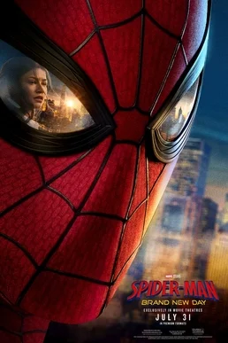
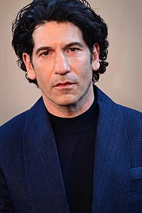
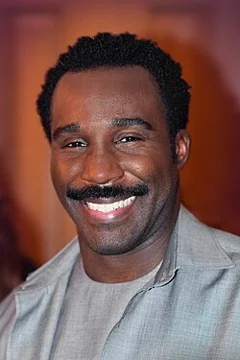

Spider-Man: Brand New Day (2026)
| Movie | Release Date | Poster |
|---|---|---|
| Spider-Man: Brand New Day PG-13 · 2h 25m · adventure · fantasy · action |  |
| Trailer |
|---|
| Rotten Tomatoes | Metacritic | IMDb |
|---|---|---|
| 90% | Not available | View on IMDb |
| Overview |
|---|
Spider-Man: Brand New Day is a 2026 American superhero film based on the Marvel Comics character Spider-Man. Produced by Columbia Pictures, Marvel Studios, and Pascal Pictures, and distributed by Sony Pictures Releasing, it is the 38th film in the Marvel Cinematic Universe (MCU) and the fourth film in the MCU Spider-Man film series following Spider-Man: No Way Home (2021). The film was directed by Destin Daniel Cretton, written by Chris McKenna and Erik Sommers, and stars Tom Holland as Peter Parker / Spider-Man alongside Zendaya, Sadie Sink, Jacob Batalon, Jon Bernthal, Florence Pugh, Tramell Tillman, Marisa Tomei, and Mark Ruffalo. In the film, Parker is on his own and dedicated to protecting New York City as the hero Spider-Man. His personal struggles and overworking cause his superpowers to evolve while he faces a new telepathic threat. Full plot (spoilers)After Dr. Stephen Strange 's magic spell makes the world forget that Peter Parker exists, he chooses to protect his girlfriend Michelle "MJ" Jones-Watson and best friend Ned Leeds by not reintroducing himself to them. Over the next four years, Parker anonymously protects New York City as its celebrated hero Spider-Man. He defeats major criminals, including Mac Gargan and the Hand ninjas, earning the trust of police detective Jean DeWolff . Parker regularly visits his aunt May 's grave. Parker stops Frank Castle from causing collateral damage in pursuit of a tank that crashes into a Department of Damage Control (DODC) prison. The driver is possessed by a telepath who body hops from person to person to help Gargan escape, but is unable to enter Parker's mind. Yelena Belova informs Parker that multiple DODC facilities have been attacked by someone searching for "V-Max". DODC director Bill Metzger , now using the Hand for security, denies any knowledge of "V-Max" to Parker. Ned and MJ move back to New York after graduating from MIT . Parker encounters them and sees MJ kiss her new boyfriend. Returning home in distress, he wakes up the next day with heightened senses and spinnerets in his wrists. When the telepath attacks another DODC facility with a possessed Gargan, Parker loses control of his new abilities and brutally beats Gargan, inadvertently injuring a police officer. After DeWolff tells him to regain control, Parker learns from Bruce Banner , who has an inhibitor device that uses siRNA to suppress his super-powered alter ego , the Hulk, and builds his own inhibitor. While he tests it, the telepath finds his apartment and learns about MJ from an unsent reintroduction letter he wrote to her. Parker races to get MJ to safety, but the telepath possesses and almost kills her. He rescues MJ and identifies the telepath as teenager Jean Grey . Parker takes MJ to Castle's hideout for protection, where she helps complete his inhibitor and a universal inhibitor. Jean attacks the DODC's headquarters with a possessed Banner, whose inhibitor is removed, causing him to become the Hulk. While Parker fights the Hulk, Jean possesses Castle to open a vault hiding DODC agents. Parker calms the Hulk, then blocks Jean's powers with the universal inhibitor while Metzger tranquilizes her. Jean mentions "Sara" before losing consciousness; Metzger claims he remembers thinking of a colleague by that name while possessed by Jean. Parker returns to MJ, who has found the letter. He apologizes for not telling her and declares his love, but MJ does not remember him nor reciprocate his feelings. Despite this, she invites him to her and Ned's apartment, where a masked Parker bonds with them both. After MJ describes not remembering anything while possessed, Parker realizes Metzger lied. Parker contacts Yelena, who learns from redacted DODC files that Sara is Jean's sister, another telepath kidnapped by the DODC. Metzger experiments on Jean at a DODC facility on Roosevelt Island that Parker infiltrates. Jean deduces that "V-Max" is the weathered label on the air vent in her cell, the last thing Sara saw—and mentally communicated to Jean—before she died. Enraged, Jean creates a psionic field that extends beyond the facility, freezing everyone within it except for Parker, including MJ and Ned. Jean rebuffs Parker's apologies and attacks him using the Hand. He removes his inhibitor and embraces his new abilities, defeating the Hand and stopping Jean from killing Metzger. Parker lets her enter his mind, where she experiences a memory of May saying she loves him for who he is. Parker and Jean reconcile over their respective losses. Parker senses Castle shooting at Jean from a distance and shields her, sustaining a critical injury. Jean drops the psionic field. Parker wakes up in a hospital with a remorseful Castle, who says Jean remotely kept him alive with her powers. Jean leaves the city, Metzger disappears, and the DODC comes under investigation. At May's grave, Parker vows to stop trying to do everything alone, later agreeing to let DeWolff handle a robbery while he recovers. Seeing Ned again, Parker reintroduces himself with their old handshake. |
| Actor | Character | Photo |
|---|---|---|
| Tom Holland | Peter Parker / Spider-Man A former Avenger who received spider-like abilities after being bitten by a radioactive spider. |  |
| Zendaya | Michelle "MJ" Jones-Watson Parker's former classmate and ex-girlfriend who attended the Massachusetts Institute of Technology (MIT) with Ned Leeds, with whom she shares an apartment. |  |
| Sadie Sink | Jean Grey A young mutant with psionic abilities such as telekinesis , telepathy , and possession . | No photo |
| Jacob Batalon | Ned Leeds Parker's former best friend who attended MIT with MJ. |  |
| Jon Bernthal | Frank Castle / Punisher A vigilante who, following the brutal murder of his family, aims to fight the criminal underworld by any means necessary, no matter how lethal the results are. |  |
| Florence Pugh | Yelena Belova / Black Widow A member of the New Avengers who was originally trained in the Red Room to be a Black Widow assassin. | |
| Tramell Tillman | Bill Metzger The head of the DODC. |  |
| Marisa Tomei | May Parker Peter's aunt, who was killed in No Way Home . |  |
| Mark Ruffalo | Bruce Banner / Hulk A founding Avenger and genius scientist who, because of exposure to gamma radiation , transforms into a muscular, green-skinned humanoid when enraged or agitated. |  |
| Liza Colón-Zayas | Jean DeWolff | No photo |
| Michael Mando | Mac Gargan | No photo |
| Krondon | Tombstone | No photo |
| Eman Esfandi | The Boyfriend | No photo |
| Zabryna Guevara | Sheila Rivera | No photo |
| Olivia Booth-Ford | Sara Grey-Bailey | No photo |
| Taryn Marie Butler | Apartment Girl | No photo |
| Fan Xiaoshuang | Snow | No photo |
| Naomi Watts | E.V. | No photo |
| Keith David | Narrator of Spider Video | No photo |
| Detail | Value |
|---|---|
| Directed by | Destin Daniel Cretton |
| Written by | Chris McKenna, Erik Sommers |
| Produced by | Kevin Feige, Amy Pascal, Avi Arad, Rachel O'Connor |
| Music by | Michael Giacchino |
| Cinematography | Brett Pawlak |
| Edited by | Not available |
| Production companies | Columbia Pictures, Marvel Studios, Pascal Pictures |
| Distributed by | Sony Pictures, InterCom |
| Running time | 145 minutes |
| MPAA rating | PG-13 |
| Budget | $225 million |
| Box office | Not available |
Overview, plot, and cast descriptions are from Wikipedia (CC BY-SA 4.0). Credits, ratings, and box office are from Wikidata.